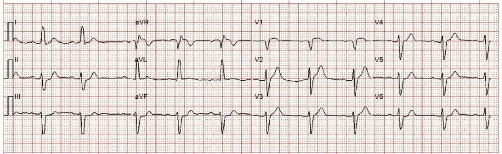
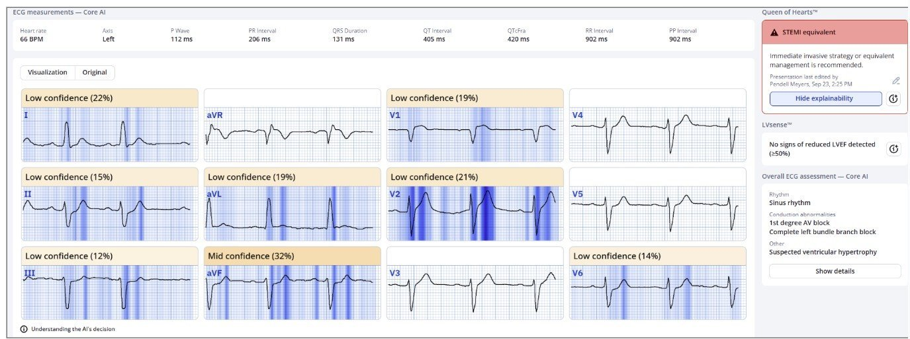
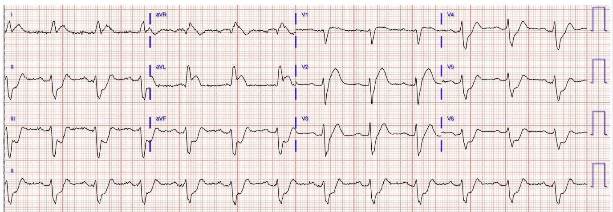
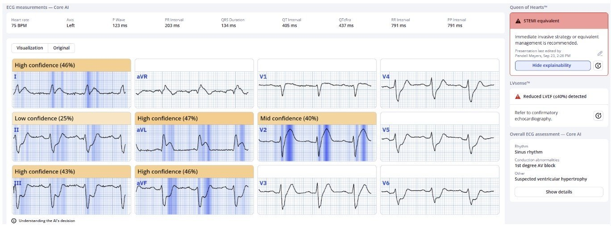
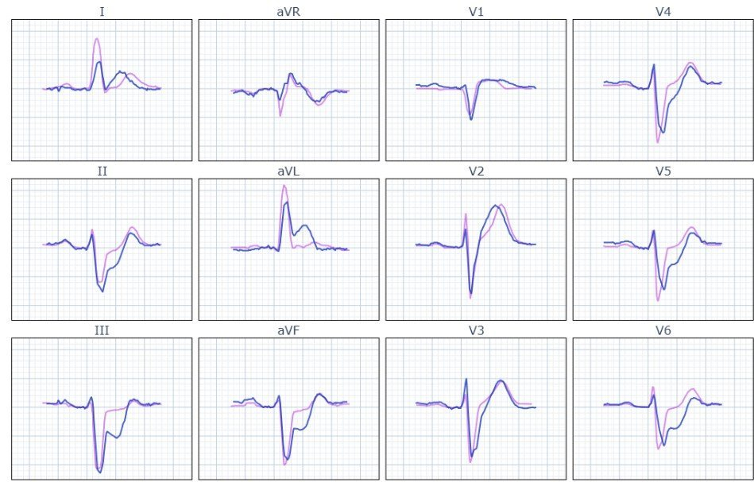
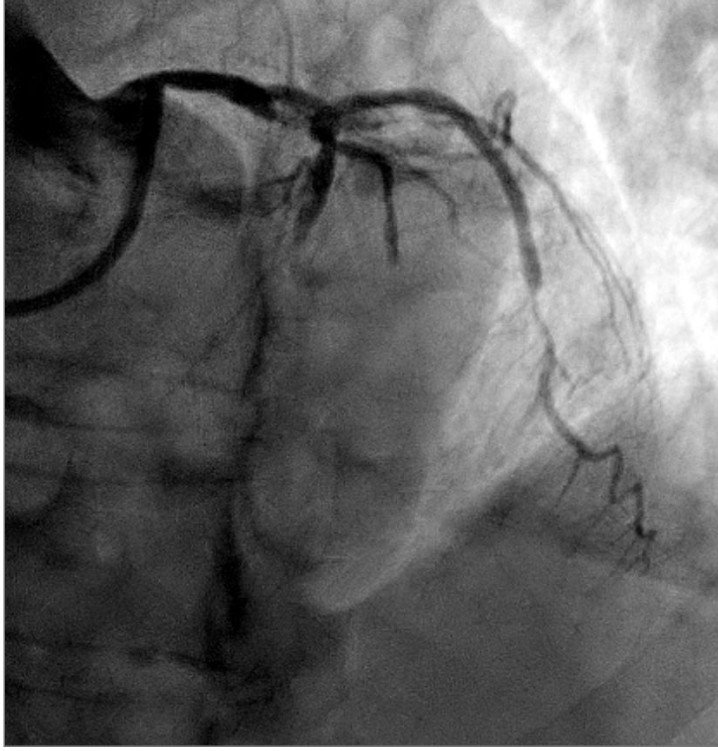
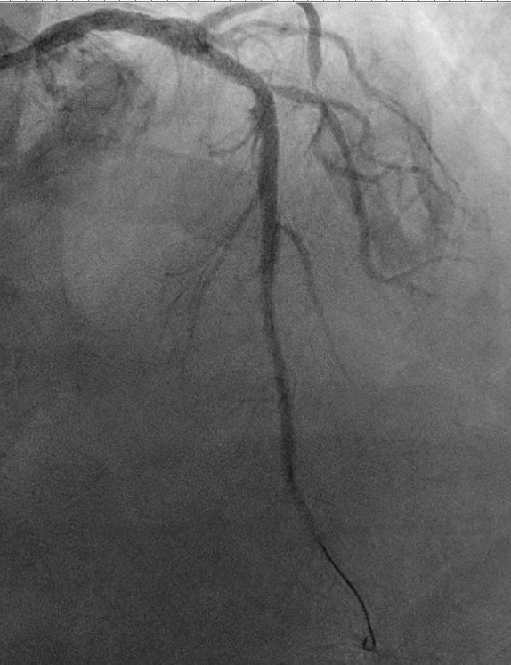
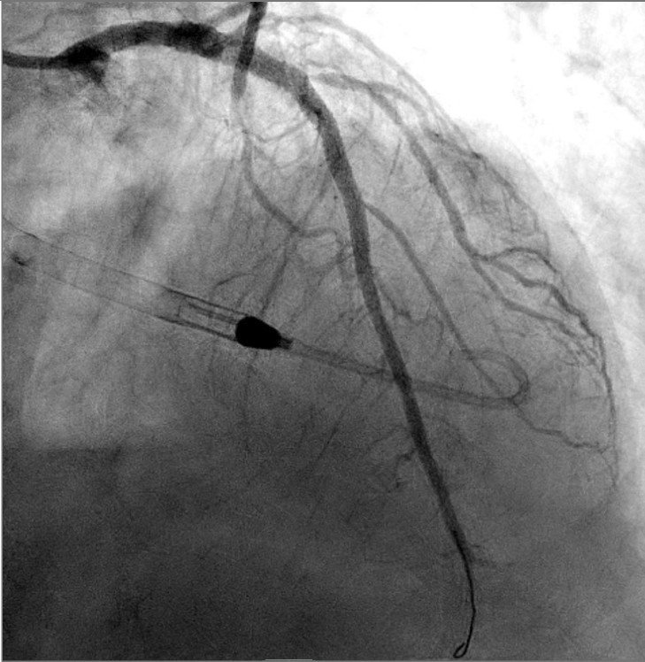
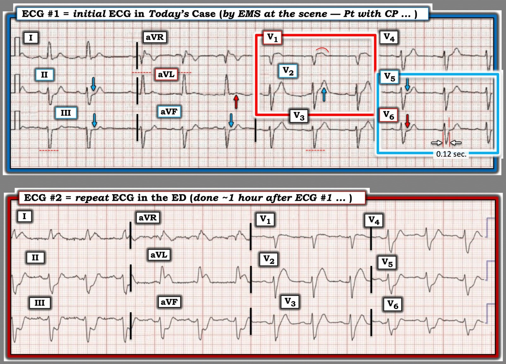

27/10/2025 — Một người đàn ông ở độ tuổi 70 bị đau ngực cấp. Cách xử trí đã ảnh hưởng tới kết cục như thế nào?
Bản dịch tiếng Việt của bài "A man in his 70s with acute chest pain. How did management affect the outcome?" – Dr. Smith’s ECG Blog. Giữ nguyên toàn bộ 9 hình ảnh của bản gốc.
Gửi bởi một người ẩn danh, viết bởi Pendell Meyers
Một người đàn ông ở độ tuổi 70 nhập viện vì đau ngực cấp, khó thở, buồn nôn, nôn và vã mồ hôi. Cơn đau bắt đầu khoảng 4 giờ trước khi đến viện và vẫn còn đang diễn ra khi đội cấp cứu ngoài viện (EMS) tới. Các dấu hiệu sinh tồn trong giới hạn bình thường.
Điện tâm đồ của EMS được truyền tới bác sĩ khoa cấp cứu (ED):


Bạn nghĩ gì?
Nhịp xoang kèm blốc phân nhánh trái trước (left anterior fascicular block). Có ST chênh lên (STE) ở V1 và V2, không đạt tiêu chuẩn STEMI. Có hình ảnh xoáy trước tim (precordial swirl) của OMI do tắc LAD, và gợi ý STE gần như đồng hướng ở aVL (đúng ra, trong bối cảnh QRS này, ở trạng thái nền phải có ST chênh xuống (STD) ngược hướng tương xứng). Có STD soi gương đồng hướng ở II, III và aVF, càng khẳng định thêm các dấu hiệu ở vùng bên cao. Phân nhánh trái trước (LAF) luôn được cấp máu bởi LAD. Điện tâm đồ này có giá trị chẩn đoán tắc cấp LAD.
____
Smith:
Riêng LAFB thì không làm QRS rộng, nên thực ra đây là chậm dẫn truyền trong thất (IVCD, QRS >/= 120 ms) với hình dạng giống LBBB và trục lệch trái, trông đúng là giống LAFB. Với IVCD này, cũng như với LBBB, ST/T phải ngược hướng. Như Pendell đã nêu, ở aVL, ST lại đồng hướng. Mức đồng hướng chưa tới 1 mm, nhưng lẽ ra nó phải ngược hướng khoảng 10%, tức là 1 mm. Do đó, có hơn 1 mm ST chênh lên TƯƠNG ĐỐI . Và có ST chênh xuống soi gương đồng hướng ở các chuyển đạo dưới.
Về xoáy trước tim (xem bài báo này): người ta có thể không nghĩ là có ST chênh xuống ở V5-6 như xoáy trước tim đòi hỏi, nhưng, một lần nữa, lẽ ra phải có ST chênh lên ngược hướng với sóng S âm, rộng. Vì vậy có lẽ có ST chênh xuống TƯƠNG ĐỐI ở V5-6. Quy tắc rất đặc hiệu của chúng tôi cho xoáy trước tim đòi hỏi tỷ lệ sóng T trên sóng S từ 0,40 trở lên; ở đây là 7/9 = 0,77. Trong ca này, còn có ST chênh lên do thiếu máu cục bộ ở V1 (ST/S > 25%)
____
Như vậy điện tâm đồ có giá trị chẩn đoán tắc LAD, OMI do LAD.
Đây là kết quả đọc của Queen of Hearts (cô ấy đồng ý, và hãy chú ý cô ấy thấy sóng T tối cấp ở V2 và STE ở V1, ngoài aVL kèm các dấu hiệu soi gương ở các chuyển đạo dưới):


Ứng dụng PMcardio for Individuals 3.0 mới nay đã có mô hình Queen of Hearts mới nhất và khả năng giải thích của AI (bản đồ nhiệt màu xanh)! Tải ngay cho iOS hoặc Android. https://www.powerfulmedical.com/pmcardio-individuals/ Ứng dụng chưa được FDA phê duyệt, nhưng đã được chứng nhận CE ở EU.
Bác sĩ khoa cấp cứu ghi nhận “điện tâm đồ của EMS không đạt tiêu chuẩn STEMI.”
Khoảng 1 giờ sau, một điện tâm đồ ghi lại được thực hiện tại khoa cấp cứu:


Hy vọng ca này dễ với tất cả mọi người.


Để tham khảo, đây là hai điện tâm đồ chồng lên nhau, cả hai đều có giá trị chẩn đoán như nhau.


Đến lúc này, báo động STEMI (code STEMI) mới được kích hoạt.
Chụp mạch vành cho thấy tổn thương thủ phạm là tắc hoàn toàn đoạn gần LAD.






Dù đã được PCI, sốc tim vẫn tiến triển ngay trên bàn thông tim. Đã dùng Impella, và bệnh nhân được đặt nội khí quản vì suy hô hấp tiến triển.
Cuối cùng bệnh nhân tử vong.
Mặc dù nguy cơ tử vong của bệnh nhân đã cao ngay cả trước khi đến viện, đã có một giờ chẩn đoán sai. Chậm trễ một giờ có thể làm mất tới 50% lợi ích giảm tử vong của tái tưới máu. Có thể bệnh nhân đã có kết cục tốt hơn nếu được tái tưới máu sớm hơn 1 giờ.
Bạn nghĩ tiêu chuẩn STEMI phát hiện tốt các trường hợp tắc hoàn toàn đoạn gần LAD? Hãy nghĩ lại:
Meyers HP, Sharkey SW, Herman R, de Alencar JN, Shroff GR, Frick WH, Smith SW. Failure of standard contemporary ST-elevation myocardial infarction electrocardiogram criteria to reliably identify acute coronary occlusion of the left anterior descending coronary artery (Thất bại của các tiêu chuẩn điện tâm đồ nhồi máu cơ tim ST chênh lên chuẩn hiện hành trong việc nhận diện đáng tin cậy tắc cấp động mạch vành liên thất trước). Tạp chí EHJ: ACC (2025) 00,1-9. https://doi.org/10.1093/ehjacc/zuaf037
Đây là thêm nhiều ví dụ về xoáy trước tim
= = =
======================================
BÌNH LUẬN CỦA TÔI, bởi KEN GRAUER, MD (27/10/2025):
Ca hôm nay thật đáng tiếc ở chỗ việc không nhận ra OMI cấp trên điện tâm đồ ban đầu của ca hôm nay đã dẫn tới chậm trễ 1 giờ trong việc thông tim và PCI. Như Bác sĩ Meyers đã nhấn mạnh — chúng ta không hề biết liệu nhận ra tắc cấp động mạch vành sớm hơn có làm thay đổi kết cục cuối cùng của ca nguy cơ cao này hay không. Dù vậy — việc xem xét hồi cứu những manh mối đã có mặt trên điện tâm đồ #1 hy vọng sẽ giúp ích cho việc đọc các ca sau này.
===
Điện tâm đồ Ban đầu: Một số điểm chung và điểm nâng cao
Để rõ ràng và dễ so sánh, ở Hình 1 — tôi đã đặt cạnh nhau 2 điện tâm đồ của ca hôm nay. Những suy nghĩ của tôi dưới đây nêu bật thêm một số điểm ngoài những điểm Bác sĩ Meyers đã bàn ở trên:
- Xem xét điện tâm đồ #1 một cách hệ thống — tôi thích bắt đầu với nhịp. Mặc dù không có dải nhịp chuyển đạo dài — nhịp nhìn chung có vẻ khá đều, dù khoảng R-R có thay đổi nhẹ ( = loạn nhịp xoang).
- Về các khoảng — tôi đo được khoảng PR = 0,21 giây, mà tôi coi là vẫn “trong giới hạn bình thường” ở người lớn tuổi. Nhưng phức bộ QRS rộng (rõ ràng 0,12 giây về thời gian — như thấy ở chuyển đạo V6 trong Hình 1). Hơn nữa, QRS “trông” rộng.
- LƯU Ý #1: Trong đa số trường hợp — một LAHB (blốc phân nhánh trái trước) đơn độc không làm QRS rộng thêm quá 0,01-0,02 giây, nên QRS rộng thực sự thường sẽ không xuất hiện chỉ do LAHB. Nói một cách chặt chẽ — tôi thiên về xếp hình dạng và thời gian QRS ở điện tâm đồ #1 là IVCD (chậm dẫn truyền trong thất), ở đây kèm LAD (trục lệch trái).
- Các điểm nâng cao (Vượt ra ngoài phần cốt lõi): Nếu không dùng cách tiếp cận hệ thống — rất dễ bỏ sót QRS rộng trên điện tâm đồ ban đầu này. Với tôi — việc nhận ra IVCD trên bản ghi ban đầu này không chỉ có ý nghĩa học thuật — vì nó gợi ý cho tôi thêm những lý do khiến sóng ST-T ở chuyển đạo I và aVL đáng ngờ trên điện tâm đồ #1 (tức là, QRS rộng với phần dương chiếm ưu thế ở chuyển đạo I,aVL này giống dẫn truyền kiểu lbbb — vốn thường đi kèm sóng ST-T chênh xuống, nhưng điều đó lại không có ở các chuyển đạo này).
- = = =
- LƯU Ý #2: Về “Quan điểm của tôi” về tầm quan trọng của việc dùng Cách tiếp cận hệ thống khi đọc điện tâm đồ 12 chuyển đạo — Xem Bình luận của tôi trong bài ngày 17 tháng Mười năm 2022.
- LƯU Ý #3: Để ôn lại “Quan điểm của tôi” về một cách dễ dùng để chẩn đoán loại rối loạn dẫn truyền trong chưa tới 5 giây — BẤM VÀO ĐÂY để xem ECG Video của tôi về chủ đề này.
- LƯU Ý #4: Cần lưu ý rằng biên độ QRS bị cắt cụt trên điện tâm đồ #1 vì đây là bản ghi trước viện (và ít nhất là ở Mỹ — nhiều hệ thống cấp cứu trước viện tự động cắt cụt các sóng QRS dương và âm ở mức ~10 mm). Khi so sánh biên độ QRS trên điện tâm đồ #2 không bị cắt cụt tại khoa cấp cứu — có thể thấy hiệu ứng cắt cụt trước viện này không tạo nhiều khác biệt trên bản ghi ban đầu hôm nay — NHƯNG — Nhận biết hiện tượng tự động cắt cụt QRS trên điện tâm đồ trước viện đôi khi có thể tạo khác biệt rất lớn trong cách chúng ta đọc! (Xem Bình luận của tôi trong bài ngày 20 tháng Sáu năm 2020).
= = =
Các dấu hiệu điện tâm đồ của OMI cấp:
Sự hiện diện của IVCD thường khiến việc nhận ra OMI cấp khó khăn hơn nhiều — vì có thể khó dự đoán các thay đổi sóng ST-T không do thiếu máu cục bộ lẽ ra trông như thế nào. Theo “kinh nghiệm thực hành” — tôi tìm những thay đổi sóng ST-T không nên có mặt.
- Trên điện tâm đồ ban đầu hôm nay — “mắt” tôi lập tức bị hút về 2 chuyển đạo trong hình chữ nhật ĐỎ ( = chuyển đạo V1 và V2).
- Bất kể QRS rộng — đoạn ST dạng vòm (coving) và mức ST chênh lên không tương xứng ở chuyển đạo V1 rõ ràng là bất thường (xét theo kích thước nhỏ của QRS ở chuyển đạo này).
- Tôi thấy thú vị là hình dạng sóng ST-T ở chuyển đạo V2 kế bên rất khác với ST dạng vòm ở chuyển đạo V1 — nhưng theo Bác sĩ Meyers, độ “đầy đặn” không tương xứng của sóng ST-T ở chuyển đạo V2 ở người đàn ông độ tuổi 70 với CP mới (đau ngực) này đủ tiêu chuẩn là sóng T tối cấp.
- Tôi thấy khó đánh giá hình dạng sóng ST-T ở các chuyển đạo kế bên V3,V4 hơn — nhưng rõ ràng có ST thẳng đuỗn ở V5,V6, với ST chênh xuống nhẹ ở chuyển đạo V6 (trong hình chữ nhật XANH).
- Như tôi nêu bật trong Bình luận của tôi ở cuối trang của bài ngày 15 tháng Mười năm 2022 — chẩn đoán Xoáy trước tim (do tắc LAD đoạn rất gần) được gợi ý ngay trên điện tâm đồ #1 bởi: i) ST chênh lên ở chuyển đạo V1,V2 — với ST chênh lên ở chuyển đạo V1 biểu hiện một hình dạng khác với dự kiến; — và, ii) ST chênh xuống với dạng dẹt ở chuyển đạo V6 (và thường cả ở chuyển đạo V5).
- Ủng hộ cho tắc đoạn gần LAD trên điện tâm đồ #1 — là dấu hiệu i) ST chênh xuống soi gương ở các chuyển đạo dưới; — và, ii) sóng ST-T dương bất thường ở chuyển đạo I,aVL mà tôi đã mô tả ở trên ở bệnh nhân có IVCD này.
= = =
Hình 1: So sánh 2 điện tâm đồ của ca hôm nay.


= = =
Những gì ta học được từ điện tâm đồ ghi lại tại khoa cấp cứu:
Nhồi máu vùng trước lan rộng là rõ ràng trên điện tâm đồ #2. Dù vậy — còn nhiều điều để học từ việc so sánh cẩn thận từng chuyển đạo một giữa 2 bản ghi ở Hình 1.
- Cách TỐT NHẤT để cải thiện khả năng nhận ra các dấu hiệu điện tâm đồ cấp kín đáo — là quay lại sau khi chẩn đoán đã rõ ràng để XEM LẠI LẦN NỮA điện tâm đồ ban đầu lúc các dấu hiệu còn kín đáo hơn nhiều.
- Mối lo ngại của tôi về hình dạng sóng ST-T không điển hình ở chuyển đạo I,aVL của điện tâm đồ #1 (do QRS rộng với hình dạng giống lbbb ở các chuyển đạo này) — đã được xác nhận bởi tính chất tối cấp rõ ràng và ST chênh lên thấy ở chuyển đạo I và aVL trên điện tâm đồ #2.
- ST dẹt và chênh xuống kín đáo ở các chuyển đạo dưới trên điện tâm đồ #1 — rõ ràng là điềm báo trước cho ST chênh xuống rõ rệt xuất hiện sau đó trên điện tâm đồ #2.
- Sóng T kiểu de Winter giờ đã xuất hiện ở các chuyển đạo giữa ngực của điện tâm đồ #2 — kèm ST chênh xuống rõ rệt ở chuyển đạo V5,V6 (ST chênh xuống ở chuyển đạo ngực bên xa nhất này là thay đổi soi gương của tắc LAD đoạn rất gần).
- Cuối cùng — tìm được một điện tâm đồ trước đây của bệnh nhân hôm nay sẽ đặc biệt hữu ích cho việc xem xét hồi cứu của chúng ta (nhất là về việc QRS rộng hay hẹp trên bản ghi nền của bệnh nhân — so với QRS mới rộng ra là thêm một dấu hiệu sớm của thiếu máu cục bộ cấp).
= = =
= = =